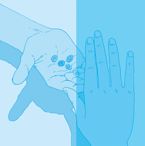

Drogenkonsum ist grundsätzlich gefährlich, denn illegale
Drogen sind in ihrer Wirkung größtenteils nicht kontrollierbar.
Wer Drogen konsumiert, ist ein Risikofaktor am Arbeitsplatz.
Er gefährdet die Kollegen und natürlich sich selbst.
Auch wer "nur mal probiert", muss wissen, dass die
Wirkung tagelang anhalten kann.
Es gibt verschiedene Stufen des Konsums:
| Probier- und Experimentierkonsum | |
| Gelegenheitskonsum (maximal fünf Konsumtage im Monat) |
|
| Gewohnheitskonsum |
Letzterer bezeichnet den oft schon täglichen Konsum. In diesem Stadium kann man bereits von psychischer (seelischer) oder physischer (körperlicher) Abhängigkeit sprechen.
